INVESTIGATIONS
In this section I outline the set of questions I asked, and what I found.
VISUAL IDENTIFICATION OF SYNCHRONY
1. When we plot EDA's, processed EDA's, peak delays, correlations, and average number of peaks, is synchrony evident?
Occasionally, synchrony might be visually evident as early in the process as the raw, but normalized EDA readings, as in this sample:
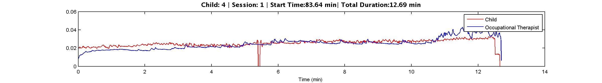
Looking at this particular example, one might get a general perception of synchrony, but there are many factors that might be erroneously contributing to that perception, and the signals are still rather noisy. Most of the time, with raw EDA, it is not immediately obvious that there is much synchrony of any sort. Let us go through the process of looking at one of our sessions. In this particular case, the data has met numerical cutoffs, so we become interested in the context. In this case, a young boy is explaining a pretend scenario about a super hero to his occupational therapist. They are facing eachother and she is asking him detailed questions about it. This case is particularly interesting because he begins the session by being rather unhappy that he is there, and not really wanting to engage, but later becomes far more interested, and begins to face her and lean in to speak to her. In the middle, around six minutes in, they are very engrossed in conversation, so we might hypothesize that a peak in correlation or similarity in peaking frequency might occur here. Towards the end of the sequence, she suggested that he use a toy that is a harness, so that he can pretend to be flying, while he answers more questions. The spike takes place right after she suggests it, as the child makes a gesture of excitement. We could hypothesize that this point would be another place where we might see higher correlation of peaks. We begin by smoothing the data, and looking at whether there is a trend in the delay between peaks.
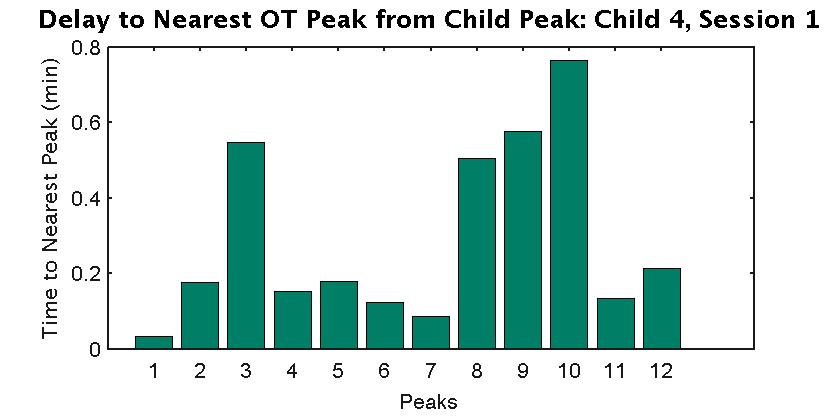
In this case, there is a clearly decreasing trend in the delay between peaks from the child and OT during both the middle and end of the segment. As we look at the delay between peaks in the two different EDAs, and see that the peaks become closer and closer in proximity around both of our periods of interest, though the peaks are not spatially distributed according to time, so we must be careful. While this trend may be due to other reasons, we can note that the child and OT are not interacting with other people and there are no other children in the room during the periods of time in the segment that synchronous peak behavior is expected.
We can also examine how cross correlation of the two smoothed signals varies over time, either examining overall correlation of the signals as time goes on, or over a sliding window:
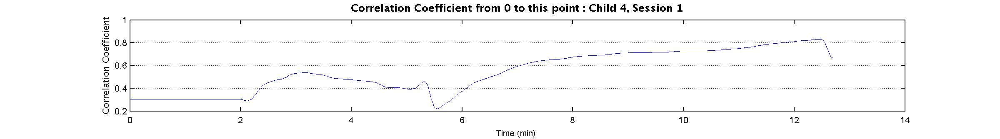
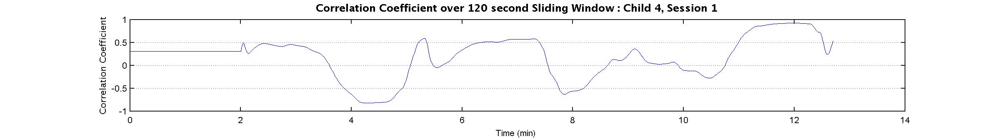
Again, upon examination, we can see that correlation does increase over time for the signals, and on a smaller time resolution, in the middle of the segment, as well as towards the end around the time when the child expresses excitement, correlation is very high.
Finally, we can examine the average number of peaks over a sliding window to get an idea of the trend that the frequency of peaking has over the segment:
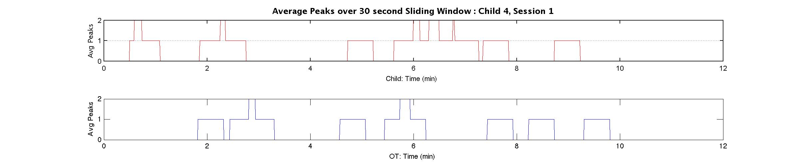
Looking at this segment, we can see that the frequency of peaking is most similar around 6 minutes into the segment, and 12 minutes into the segment. This lines up with the peaks in correlation that take place in the segment, so based on all of these methods of visualizing synchrony, we can drill down segments of time where physiological responses do correlate and match up well with qualitative measures of social engagement, and in this case, our hypothesis that periods of time in which the two subjects interacted in a manner that was highly engaged would reflect physiological responses that had similar peaking patterns was correct.
2. How do these measures of synchrony change when children are engaged with their care provider (defined here as mutually actively looking at one another ofte and speaking to one another without interruption or interference by anybody else), versus when they are not? In theory, the measures should reflect less synchrony.
We can compare, for example, the case of a child seeing the same OT over two sessions. In one session, she is engaged, and cheerfully talks to the OT about an exercise she is enjoying. In the second session, she is not actually engaging at all with the OT because the OT is asking her to play with a toy that she is afraid of. In the case of this example, this is reflected visually in the following plots. Below, we see the original plot of normalized EDA, and follow it with a plot depicting the average number of peaks over time, with a window of 60 seconds for both data sets.
Let us examine the plots for an engaged session. Much like in the previous segment, where we saw evidence of synchronous physiological response during times of engagement, the plots during the session below show similar trends of lower peak delays, and higher correlation in areas of the segment where the OT and child are more engaged with one another (as in, speaking to one another without being interrupted, facing each other, and actively mentally engaging one another through conversation, or the OT is watching the child closely as the child shows them something):
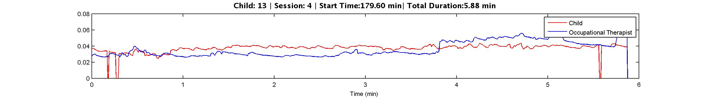
Here, we see a generally similar peaking trend as well as overall arousal trend in the child and OT when examining the raw EDA.
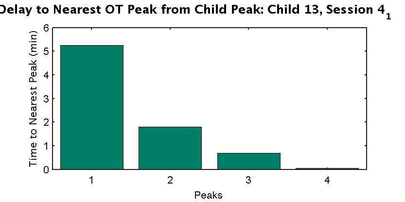
There aren't many peaks, so we cannot necessarily use this measure to give us very much information, though we can note that it reflects a trend towards peaking that is delayed less and less.
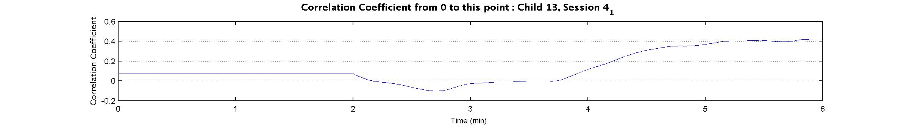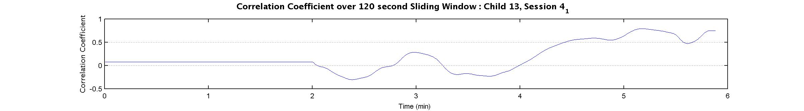
Important aspects to note are that overall, in a segment where the child has been engaged, we see that as we take correlation of the whole segment, it increases with time. In this case, there weren't many peaks after the signals were processed, so the peak delay measure and frequencies were not as useful.
Now we examine a session in which the same child and OT are, for the most part, not engaged with one another.
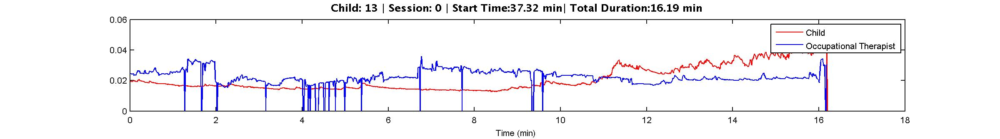
Examining the raw EDA, we do not see much synchrony in the signals lining up in terms of the trends of peaking.
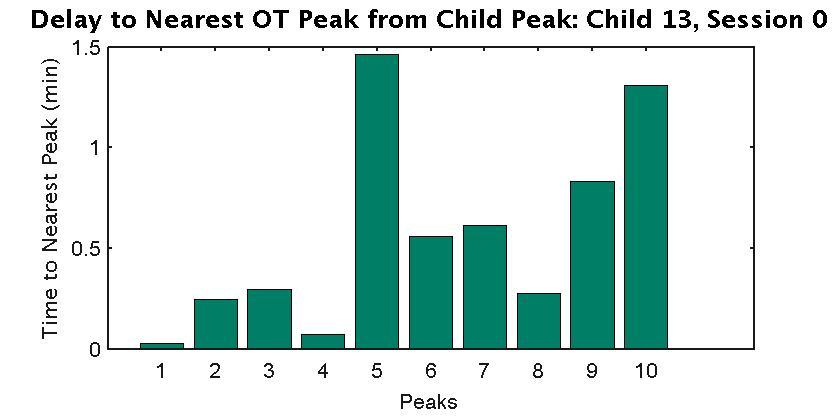
If we examine this plot, while it initially looks promising, as though it is indicative of synchrony, we can see that the variance over the time differences is very low, so the peaks are relatively close together throughout the segment, there is no real set of trends.
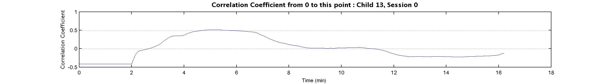
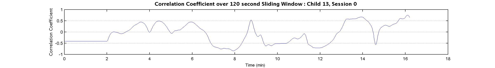
Most importantly, while examining correlation, we see that correlation is mostly negative over a 2 minute window through the segment, and rarely ever gets past a coefficient of .5, so this is consistent with our hypotheses of how these trends should be in response to a period of time in which the OT and child are not engaged.